Landau-Ginzburg Theory
Onwards we continue in our quest for understanding complicated interacting systems!
Overview
We're going to take a slightly different approach than in class. (See the bottom of this page for my reasoning.) Rather than jumping right into Landau and Ginzburg's functional 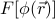, we're going to go step by step to properly build up our intuition. Here's the game plan:
We want to understand what really means, and why it's such a useful object to consider.
First we'll learn about what exactly free enenergy means, and why we care so much about it. Spoiler alert: the minima of the free energy tell you the equilibrium values! Armed with this intuition, we'll think about the free energy as a function of the magnetization density  (Landau theory), which will teach us many fabulous things:
(Landau theory), which will teach us many fabulous things:
a beautiful intuition for the behavior of second-order phase transitions
how you can find the magnetization density
at any temperature by looking at the minima of 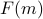a direct picture for how 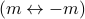 symmetry is broken when 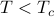
insight into how you can deduce the shape of merely with symmetry arguments
and far more….
Once we've solidified our understanding of , we'll move on and generalize to a spatially-varying magnetization density 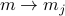, which lets us account for textures in 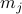 at different sites  . Also, we'll discuss how to generalize from to an order parameter
. Also, we'll discuss how to generalize from to an order parameter  to describe all sorts of phase transitions beyond ferromagnetic ordering. Finally, we'll take the continuum limit 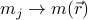 and pretend that the order parameter is defined everywhere in space 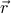 rather than just sites . If time permits, we'll also explain how to arrive at 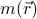 by coarse-graining. (Depending on how we cover the renormalization group later, this may or may not be useful!)
to describe all sorts of phase transitions beyond ferromagnetic ordering. Finally, we'll take the continuum limit 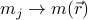 and pretend that the order parameter is defined everywhere in space 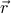 rather than just sites . If time permits, we'll also explain how to arrive at 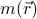 by coarse-graining. (Depending on how we cover the renormalization group later, this may or may not be useful!)
Finally, we'll discuss how we could have arrived at the shape of just by symmetry arguments. This sort of top-down or phenomenological approach is the sort of stuff that theorists fantasize about. The argument is simple, general, and powerful.
Motivation: Lingering Questions about Mean Field Approaches
We spent the last few weeks learning about the variational principle and mean field theory, but these appraoches still leave us with a few lingering questions.
Even though the variational principle tells us how to pick the ‘‘best’’ trial Hamiltonian, how do we know whether ‘‘best’’ is ‘‘good enough’’?
More precisely, even if we've minimized the variational free energy 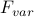 is minimized, how do we know whether we can trust its derivatives to tell us anything about correlation functions?
In our guess for the trial Hamiltonian, we assumed that every single site
felt the same ‘‘mean field’’  ; that is, we assumed a spatially uniform solution where 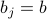 at all sites.
; that is, we assumed a spatially uniform solution where 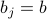 at all sites.How do we know whether a spatially uniform solution is actually the best possible solution?
More generally, can we come up with a simple and robust way to take into account the textures and spatial inhomogeneities of the mean field?
We spent so much time on the details of the Ising model, but do the results about its second-order phase transitions generalize to other systems?
Is there a conceptual framework that explains why the Ising model phase transition behaves as it does?
Can we argue how phase transitions ought to behave from a more general point of view?
As we'll see, the more sophisticated methods that we'll learn in class over the next few weeks will let us address some of these nagging questions which keep us up at night and gnaw at our sanity.
Outline
Bonus sections are marked with an *asterisk.
Movitivation
Can we trust the derivatives of the variational free energy?
How can we account for spatial variation and textures in the mean field of a material?
Can we generalize the features of phase transitions we found in the Ising model?
Probe fields are a nice trick to find magnetization.
*Interlude: What exactly is free energy
 ?
?*We have to understand the star of the show!
*Coming to terms with chemistry's curvy caricatures
*Minimizing free energy for fun and profit
*Landau theory – free energy as a function of magnetization
*A trip down memory lane with Monsieur Legendre
Spontaneous Symmetry Breaking!!! the phase diagram of second-order transitions <– Important!
How do things vary near 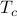? A taste of critical exponents <– Important!
*Metastability, hysteresis, spinodals, nucleation, and all that jazz
Landau-Ginzburg theory
Taking into account textures of magnetization: 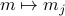
Calculating the Mean-Field Ising Landau-Ginzburg Free Energy 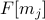
The continuum limit: the order parameter field 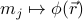
Theorist's Playground
Guessing Mr. Ginzburg's free energy from a top-down argument
Symmetry, universality, and deep implications
An opinion
Before we go on, I want to share my opinion about the way we covered this topic in our class.
I think we covered this material way too fast. We jumped directly into the deep end of the pool.
It would have been super helpful to spend more time discussing the qualitative features of second-order transitions, such as drawing pictures of the Landau Free energy, before introducing order-parameter-fields that model spatial variation. Pedagogically, it makes far more sense for us to sink our teeth into really understanding the Ising model transition so that we have some sort of concrete picture in mind before we move on to abstract things such as 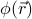. And to top it all off, the actual Landau-Ginzburg field theory is utterly unlike anything we've seen in physics before, with functional integrals and intense symmetry arguments and such, so I find it rather unenlightening and frankly a bit terrifying to dive right in to the math without preparation.
I really don't know if I ought to be so opinionated as an undergraduate, especially since I don't understand this material terribly well yet. But this is just how I feel.
Because of my strong opinions, this section of my notes will deviate a bit from the official course material. I'll still cover everything we did in class, but the ordering will a bit different. In addition, I'll insert extra bonus sections to help clarify confusing concepts and present some helpful intuition and pictures. In the end, I hope that my presentation will be approachable and understandable.
If I had a say, I would strongly encourage everyone to read the bonus sections, because
I feel that they make the actual course material much more intuitive and illuminating.
The two middle sections of the Landau theory page will be especially helpful for some intuition behind phase transations!
Personally, I find the extra topics quite fascinating, and I think it's a shame we don't get to cover them in class.
I may include some discussion about topics on the problem set in the bonus sections!?
Anyways, enough babbling. Let's get started.